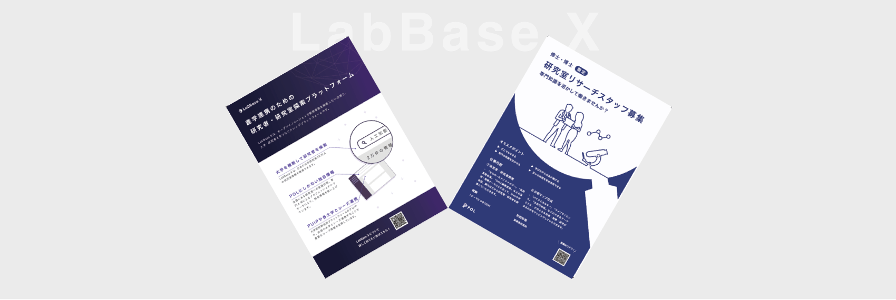

最新の技術を研究している大学研究者と共同研究したいと考える企業の研究開発部門。しかし、彼らは大学研究者とつながる手段がない、またどの研究者が自社にマッチしているかわからないという課題を抱えています。そんな企業の課題を全国の大学研究者を検索・マッチングすることで解決します。
すでに企業は研究者とのマッチングに対する課題を持っていることが明確で、サービスのワイヤーがある状態でジョインしました。研究者情報が記載されいているデータべースを作ることが決定されているおり、どのような検索UIを作るのかを考えるフェーズでした。
ジョインした直後はターゲットの課題が自分の中で不明確だったため、部署内のメンバーにヒアリングすることから始めました。企業の課題はどこにあるのか、どんな研究者情報が必要かなど、UIを作る上で必要な情報を聞きながら、必要であればこちらから提案しながらヒアリングしていきました。
コンテンツやUIのイメージがチームメンバーで共有し終わった段階で、UIを作成しました。UIの作成に関しても、随時進捗共有をしながら、また必要であれば提案をしつつ作成していきました。
クライアント様が大学の技術/研究を検索する画面の作成

企業向けサービス説明チラシ（左）、プレスリリース（右）